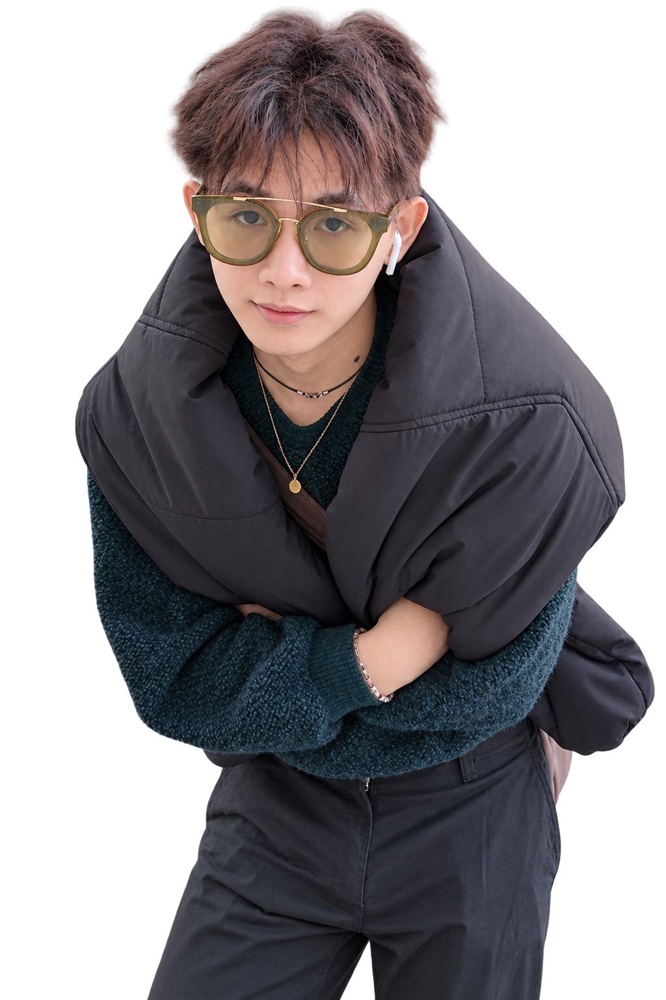
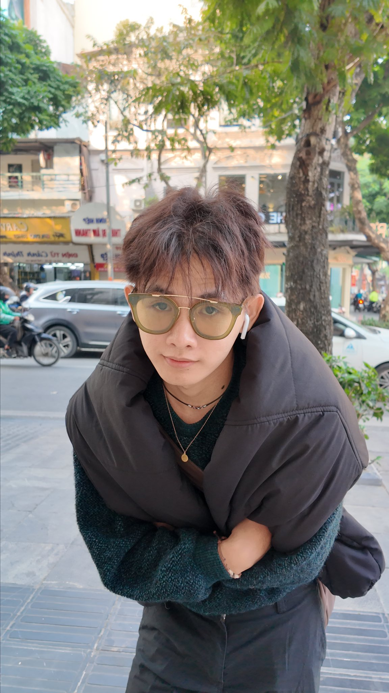
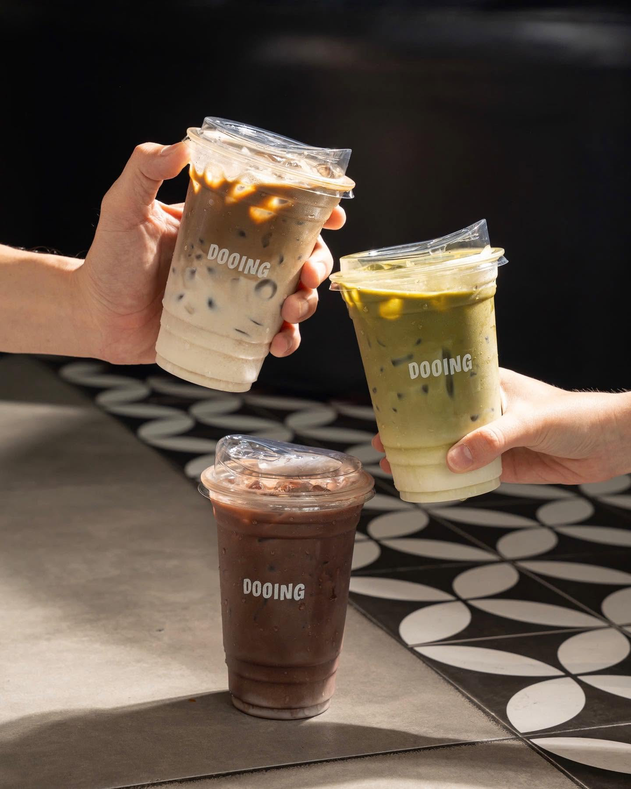
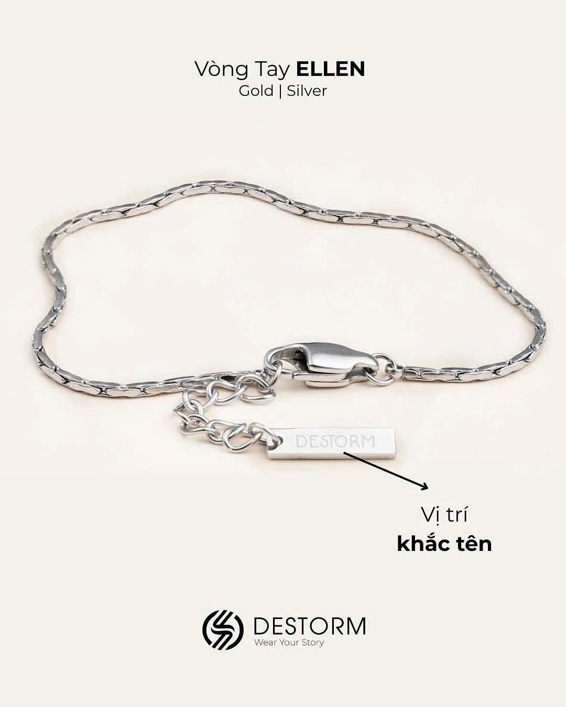
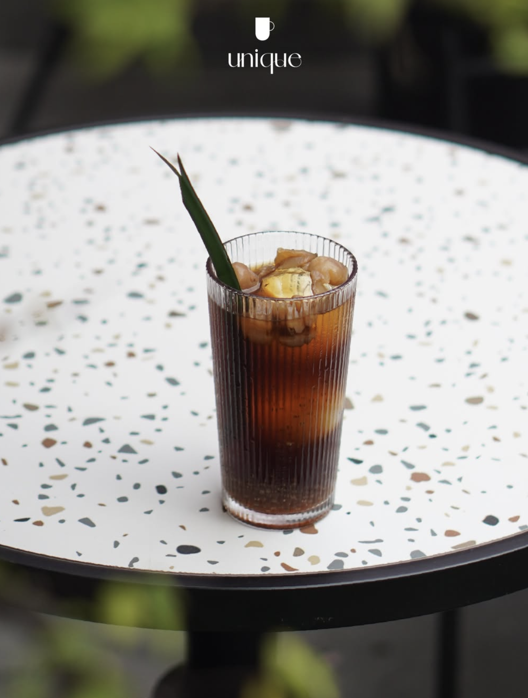
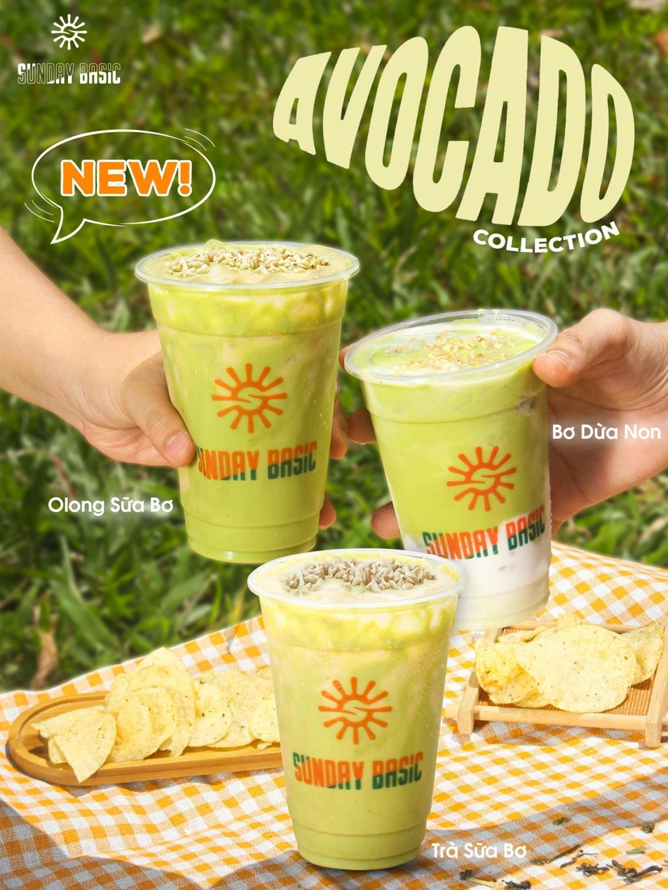

Content Creator · Storytelling · Branding
Mai Minh Đương.
Biến ý tưởng thành những câu chuyện có hình ảnh, có cảm xúc và có mục tiêu.
Content Creator với định hướng Storytelling, Visual Thinking, Branding và Marketing — tập trung tạo nội dung khiến người xem dừng lại, kết nối và ghi nhớ.


01 / About me
Tư duy nội dung
đi cùng tư duy hình ảnh.
Sinh viên năm cuối ngành Quan hệ công chúng tại HUTECH, đồng thời là nhà sáng tạo nội dung video. Mình có kinh nghiệm thực chiến trong việc lập kế hoạch truyền thông, sản xuất nội dung hình ảnh/video bắt mắt và có tư duy tốt về hình ảnh. Mục tiêu của mình là sử dụng những kỹ năng bản thân có để tìm một môi trường có thể cống hiến và trau dồi thêm.
03 / What I do
Năng lực
sáng tạo.
Tập trung vào nội dung, hình ảnh và cách thương hiệu kể câu chuyện trên các nền tảng số.
Content Strategy
Lập kế hoạch nội dung theo mục tiêu truyền thông và hành vi người xem.
Video Production
Phát triển concept, quay và dựng video ngắn theo định hướng hình ảnh rõ ràng.
Storytelling
Biến thông tin thành mạch kể có cảm xúc, nhịp điệu và điểm ghi nhớ.
Branding
Giữ tính nhất quán giữa thông điệp, hình ảnh và cảm nhận thương hiệu.
Social Media
Triển khai nội dung phù hợp đặc tính của từng nền tảng và đối tượng.
Creative Direction
Định hướng concept và visual để nội dung có ngôn ngữ hình ảnh thống nhất.
02 / Selected work
Dự án nổi bật.
Những dự án và trải nghiệm thể hiện cách mình kết hợp chiến lược nội dung, hình ảnh và storytelling để tạo kết quả trong thực tế.

01Dooing Coffee Lab
05/2026 — 11/2026
Xây dựng sự hiện diện trên TikTok cho quán cà phê “phòng thí nghiệm” bằng những câu chuyện đời thường gần gũi với Gen Z.
Vai trò & cách triển khai
Nghiên cứu đối tượng, phát triển ý tưởng và kịch bản, diễn xuất trước ống kính, quay dựng và hoàn thiện video.
Dùng video POV về đời sống thường ngày để nhân hóa thương hiệu, kết hợp âm nhạc xu hướng và hashtag phù hợp từng nhóm người xem.

Destorm Jewelry
07/2025 — 01/2026
Định hình thẩm mỹ sang trọng và kể những câu chuyện cảm xúc cho thương hiệu trang sức thủ công, khắc laser theo yêu cầu.
Vai trò & cách triển khai
Lên chiến lược và kịch bản, chuẩn bị bối cảnh, styling sản phẩm, quay và hoàn thiện hậu kỳ video.
Kết hợp video macro và âm thanh ASMR về quá trình chế tác với storytelling, voice-over về ý nghĩa riêng của món trang sức.
Andy Lú / Gemstudio
10/2024 — 07/2025
Định hình thương hiệu cá nhân nghệ thuật cho nhiếp ảnh gia Andy Lú và kết nối hậu trường sáng tạo với cộng đồng yêu thời trang.
Vai trò & cách triển khai
Lập kế hoạch đa nền tảng, quay dựng video Behind The Scenes cho TikTok và biên soạn caption Instagram. Gần 800 người theo dõi mới trên TikTok trong 1 tháng; bài Instagram đạt trung bình 2.000+ lượt thích.
Dựng series hậu trường có nhịp kể điện ảnh trên TikTok; đồng bộ feed và dùng caption storytelling để truyền tải cảm hứng sáng tạo trên Instagram.

04Unique Café
08/2024 — 02/2025
Đại diện hình ảnh thương hiệu và sản xuất video ngắn để đưa các thức uống signature đến gần hơn với khách hàng Gen Z.
Vai trò & cách triển khai
Diễn xuất trước ống kính, hỗ trợ phát triển kịch bản và biên tập hậu kỳ video.
Kể chuyện xoay quanh nhân vật với tình huống vui giữa nhân viên và khách hàng. “Latte Sau Tết” đạt 6K+ lượt xem; series “Latte Đối Kháng” đạt 20K+ cho Part 1 và 3K+ cho Part 2.

05Sunday Basic
02/2024 — 07/2024
Sản xuất nội dung TikTok cho Sunday Basic, phát triển hình ảnh thương hiệu trà sữa trẻ trung qua những câu chuyện gần gũi và hài hước.
Vai trò & cách triển khai
Phụ trách quy trình khép kín từ chuẩn bị sản phẩm, chụp ảnh, viết bài, lên kịch bản đến quay dựng và tối ưu hashtag. Sunday Basic được phát triển từ con số 0; series “Đi làm có gì vui” đạt 200K+ lượt xem và 12K+ tương tác.
Xây dựng tình huống hài hước từ đời sống công sở, lồng ghép sản phẩm tự nhiên và phát triển chuỗi nội dung TikTok phù hợp với nhóm khách hàng trẻ.
04 / Achievements
Những dấu mốc
đáng nhớ.
Một vài dấu mốc ghi nhận quá trình học tập, sáng tạo và thực hành trong lĩnh vực truyền thông.
Cuộc Thi Poster Show
Dự án thiết kế xanh mang tính ứng dụng cao “Sử Dụng Lõi Ngô Làm Bộ Lót Ly/Lót Nồi”.
Đại học HUTECH · 2026IMC Thực Chiến
Kế hoạch Truyền thông Tích hợp xuất sắc cho chiến dịch ra mắt dòng sản phẩm mới.
Đại học HUTECH · 2026Video Phóng Sự — “Đi Và Kể”
Tác phẩm phóng sự tài liệu “Hải Trình Tiếp Nối”.
Đại học HUTECH · 202605 / Contact
LET'S TALK
Let's make something
people remember.
Did I make you stop?
Let's work together.